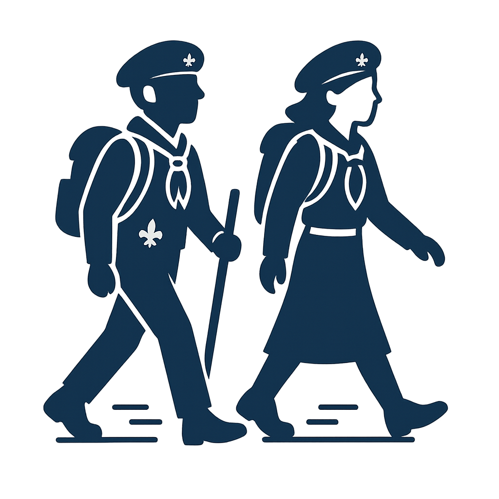

Louveteaux / Louvettes
8-12 ans • Découverte, jeux, veillées, imaginaire de la jungle...
Scouts / Guides
12-17 ans • Patrouilles, techniques scoutes, progression, responsabilité...

Routiers / Guides-Aînées
17+ • Service, marche, approfondissement spirituel et engagement...